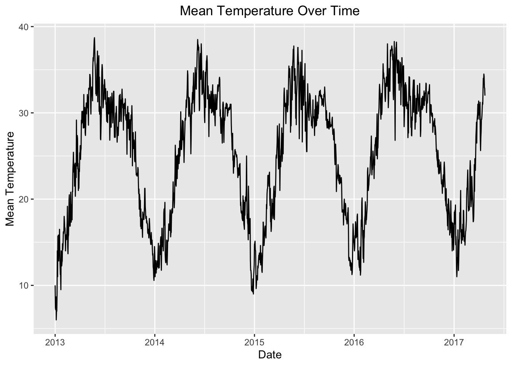
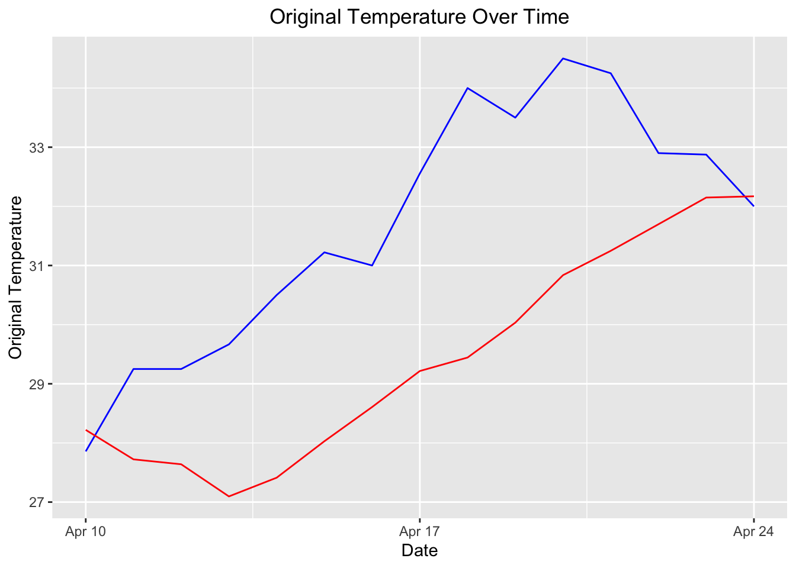

Recurrent networks can in principle use their feedback connections to store representations of recent input events in form of activation’s (“short-term memory”, as opposed to “long-term memory embodied by slowly changing weights). The most widely used algorithms for learning what to put in short-term memory, however, take too much time or do not work well at all, especially when minimal time lags between inputs and corresponding teacher signals are long. With conventional”Back-Propagation Through Time” or “Real-Time Recurrent Learning”, error signals “flowing backwards in time” tend to either (1) blow up or (2) vanish: the temporal evolution of the back-propagated error exponentially depends on the size of the weights. Case (1) may lead to oscillating weights, while in case (2) learning to bridge long time lags takes a prohibitive amount of time, or does not work at all. Long Short-Term Memory(LSTM), a novel recurrent network architecture in conjunction with an appropriate gradient based learning algorithm comes up as a remedy to solve this problem. It can learn to bridge time intervals in excess of 1000 steps even in case of noisy, in-compressible input sequences, without loss of short term time lag capabilities. This is achieved by an efficient, gradient-based algorithm for an architecture enforcing constant error flow through internal states of special units(Hochreiter and Schmidhuber 1997). Recurrent neural networks with Long Short-term Memory have emerged as an effective and scalable model for several learning problems related to sequential data. The central idea behind the LSTM architecture is a memory cell which can maintain its state over time, and non-linear gating units which regulate the information flow into and out of the cell. Most modern studies incorporate many improvements that have been made to the LSTM architecture since its original formulation.However, LSTM’s are now applied to many learning problems which differ significantly in scale and nature from the problems that these improvements were initially tested on(Greff et al. 2016).
A large part of real-world datasets are temporal in nature. Due to its distinctive properties, there are numerous unsolved problems with wide range of applications. Data collected over regular intervals of time is called time-series (TS) data and each data point is equally spaced over time. TS prediction is the method of forecasting upcoming trends/patterns of the given historical dataset with temporal features. A time series (TS) data can be break downed into trend, seasonality and error. A trend in TS can be observed when a certain pattern repeats on regular intervals of time due to external factors. In many real world scenarios, either of trend or seasonality are absent. After finding the nature of TS, various forecasting methods have to be applied on given TS. Given the TS, it is broadly classified into 2 categories i.e. stationary and non-stationary. A series is said to be stationary, if it does not depend on the time components like trend, seasonality effects. Mean and variances of such series are constant with respect to time. Stationary TS is easier to analyze and results skillful forecasting. A TS data is said to non-stationary if it has trend, seasonality effects in it and changes with respect to time. Statistical properties like mean, variance, sand standard deviation also changes with respect to time(Chimmula and Zhang 2020).
Methods
A vanilla LSTM unit is composed of a cell, an input gate, an output gate and a forget gate. This forget gate was not initially a part of the LSTM network, but was proposed later by (Gers and Schmidhuber 2001) to allow the network to reset its state. The cell remembers values over arbitrary time intervals and the three gates regulate the flow of information associated with the cell(Greff et al. 2016).
The LSTM architecture consists of a set of recurrently connected sub-networks, known as memory blocks. The idea behind the memory block is to maintain its state over time and regulate the information flow thought non-linear gating units. The Fig. 1 displays the architecture of a vanilla LSTM block, which involves the gates, the input signal \(x^{(t)}\), the output \(y^{(t)}\), the activation functions and the peephole connections. The output of the block is recurrently connected back to the block input and all of the gates.
We can describe how the LSTM model works in details by assuming a network comprising N processing blocks and M inputs. The forward pass is this recurrent neural system is described in 6 parts.
Block input. This step involves updating the block input component which combines the current input \(x^{(t)}\) and the output of that LSTM unit \(y^{(t-1)}\) in the last iteration. This can be done as shown below:
where \(W_z\) and \(R_z\) are the weights associated with \(x^{(t)}\) and \(y^{(t-1)}\) respectively while \(b_z\) stands for the bias weight vector.
Input gate. During this step, we update the input gate that combines the current input \(x^{(t)}\), the output of that LSTM unit \(y^{(t-1)}\) and the cell value \(c^{(t-1)}\) in the last iteration. This can be done as shown below:
\[i_{(t)} =\sigma(W_ix^{(t)} + R_iy^{(t-1)} + p_i.c^{(t-1)} + b_i ) -(2) \] where ‘.’ denotes point-wise multiplication of two vectors \(W_i,R_i\) and \(p_i\) are the weights associated with \(x^{(t)}\),\(y^{(t-1)}\) and \(c^{(t-1)}\) respectively while \(b_i\) represents for the bias vector associated with this component.
In previous steps, the LSTM layer determines which information should be retained in the network’s cell states \(c^{(t)}\). This included the selection of the candidate values \(z^{(t)}\) that could potentially be added to the cell states, and the activation values \(i^{(t)}\) of the input gates.
Forget gate. During this step, the LSTM unit determines which information should be removed from its previous cell states \(c^{(t-1)}\). Therefore, the activation values \(f^{(t)}\) of the forget gates at the time step t are calculated based on the current input \(x^{(t)}\), the outputs \(y^{(t-1)}\) and the state \(c^{(t-1)}\) of the memory cells at the previous time step (t-1), the peephole connections, and the bias terms \(b_f\) of the forget gates. This can be done as shown below:
\[ f_{(t)} = \sigma(W_fx^{(t)} + R_fy^{(t-1)} + p_f.c^{(t-1)} + b_f ) -(3) \] where \(W_f,R_f\) and \(p_f\) are the weights associated with \(x^{(t)}\),\(y^{(t-1)}\) and \(c^{(t-1)}\) respectively while \(b_f\) denotes the bias weight vector.
Cell. This step computes the cell values, which combines the block input \(z^{(t)}\), the input gate \(i^{(t)}\) and the forget gate \(f_{(t)}\) with the previous cell value. This can be done as shown below:
Output gate. This step calculates the output gate, which combines the current input \(x^{(t)}\), the output of that LSTM unit \(y^{(t-1)}\) and the cell value \(c^{(t-1)}\) in the last iteration. This can be done as shown below:
\[ o^{(t)} = \sigma(W_ox^{(t)} + R_oy^{(t-1)} + p_o.c^{(t-1)} + b_o ) -(5) \] where \(W_o, R_o\) and \(p_o\) are the weights associated with \(x^{(t)}\),\(y^{(t-1)}\) and \(c^{(t-1)}\) respectively, while \(b_o\) denoted for the bias weight vector.
Block output. Finally, we calculate the block output, which combines the current cell value \(c^{(t)}\) with the current output gate value as follows:
\[ y^{(t)} = g(c^{(t)}). o^{(t)}-(6) \] In the above steps, \(\sigma\), g and h denote point-wise non-linear activation functions. The logistic sigmoid \(\sigma(x) = 1/(1+e^{1-x})\) is used as a gate activation function, while the hyperbolic tangent \(g(x)= h(x)= tanh(x)\) is often used as the block input and output activation function(Van Houdt, Mosquera, and Nápoles 2020).
Analysis and Results
About Dataset This dataset provides data from 1st January 2013 to 24th April 2017 in the city of Delhi, India. The 1 parameter here under consideration is meantemp
The time series plot of the dataset is given below with date on x-axis and meantemp on y-axis respectively.
Code
mean_temp$date <-as.Date(mean_temp$date, format ="%m/%d/%Y")mean_temp$meantemp <-as.numeric(mean_temp$meantemp)ggplot(mean_temp, aes(x = date, y = meantemp)) +geom_line() +labs(x ="Date", y ="Mean Temperature") +ggtitle("Mean Temperature Over Time") +theme(plot.title =element_text(hjust =0.5))

Split dataset into train and test sets
Code
mean_temp$order=seq(1, length(mean_temp$date))# Perform min-max transformation on 'meantemp' column and store in a new column 'transformed'mean_temp$transformed <- (mean_temp$meantemp -min(mean_temp$meantemp)) / (max(mean_temp$meantemp) -min(mean_temp$meantemp))
Generally in LSTM the data needs to be in a supervised learning mode. That is done by having at least 2 variable: target variable Y and predictor X. To achieve this, we transform the series by lagging the series and have the value at time (t−k) as the input and value at time t as the output, for a k-step lagged dataset.
result =read.csv("Result.csv")result$date <-as.Date(result$date)ggplot(data = result) +geom_line( aes(x = date, y = meantemp), color ="blue") +geom_line( aes(x = date, y = Prediction), color ="red") +labs(x ="Date", y ="Original Temperature") +ggtitle("Original Temperature Over Time") +theme(plot.title =element_text(hjust =0.5))

Conclusion
Useful Links
References
Chimmula, Vinay Kumar Reddy, and Lei Zhang. 2020. “Time Series Forecasting of COVID-19 Transmission in Canada Using LSTM Networks.”Chaos, Solitons & Fractals 135: 109864.
Gers, Felix A, and E Schmidhuber. 2001. “LSTM Recurrent Networks Learn Simple Context-Free and Context-Sensitive Languages.”IEEE Transactions on Neural Networks 12 (6): 1333–40.
Greff, Klaus, Rupesh K Srivastava, Jan Koutnı́k, Bas R Steunebrink, and Jürgen Schmidhuber. 2016. “LSTM: A Search Space Odyssey.”IEEE Transactions on Neural Networks and Learning Systems 28 (10): 2222–32.
Hochreiter, Sepp, and Jürgen Schmidhuber. 1997. “Long Short-Term Memory.”Neural Computation 9 (8): 1735–80.
Van Houdt, Greg, Carlos Mosquera, and Gonzalo Nápoles. 2020. “A Review on the Long Short-Term Memory Model.”Artificial Intelligence Review 53: 5929–55.